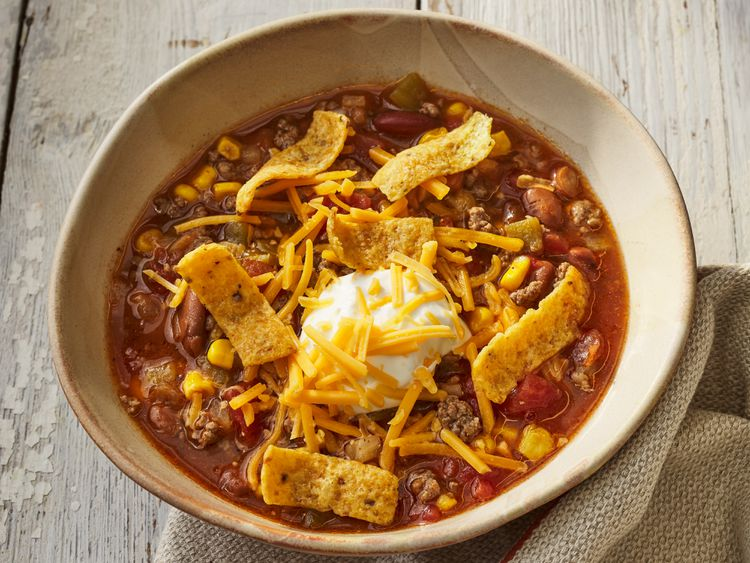

Home
Taco Soup
Credit: allrecipes.com

Description
Everybody loves taco soup for dinner. Here's how to make it.
Ingredients
- 1 lb ground beef
- 1 onion chopped
- 1 can chili beans(16 oz)
- 1 can kidney beans(16 oz)
- 1 can whole kernal corn(15 oz)
- 1 can tomato sauce(8 oz)
- 2 cups water
- 2 cans peeled diced tomatoes(14.5 oz)
- 1 can diced green chile peppers (4 oz)
- 1 package taco seasoning mix(1.25 oz)
Steps
- In a medium skillet, cook the ground beef until browned over medium heat. Drain, and set aside.
- Place the ground beef, onion, chili beans, kidney beans, corn, tomato sauce, water, diced tomatoes, green chile peppers and taco seasoning mix in a slow cooker.
- Mix to blend, and cook on Low setting for 8 hours.